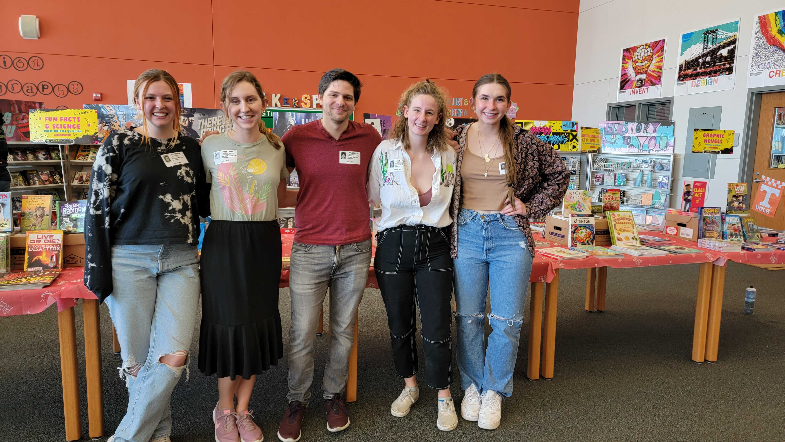

NeurReach
Neuroscience, or the study of the brain, has become an increasingly more popular field to explore. The brain
harbors
an immense number of mysteries that we still do not yet understand such as what causes neurological disorders such
as Epilepsy or Alzheimer’s? How does the brain process information about the environment that we interreact with?
What is consciousness? These questions have inspired people from vary fields of study, such as biology, physics,
computer science, engineering, and mathematics, to come together in the attempt to understand how the brain works.
Since we all have a brain, the current research goes beyond that of scientists and impacts everyone, especially
children who are still in the process of fully developing their brains, but we know that not everyone has the time
to learn about what is going on in that skull of theirs.
That is where we come in. Here at the University of Texas at Austin we have a committed and dedicated group of
graduate students from within the Institute of Neuroscience that aim to share their knowledge about the brain with
everyone else. These are students who have extensively studied the brain and how it works, as well are currently
doing their own research to expand upon our understandings of the brain. We offer a free program called NeuReach
that is open to all schools tailored to all ages where we bring in hands on Neuroscience demonstrations that aim
to
both educate the students as well as inspire them to pursue STEM work. More information regarding said
demonstrations can be seen below.
If you are interested in having a group of UT Austin Neuroscientist qcome visit your school, please feel free to
reach out to us. You can email me at lbecker95@utexas.edu. Thank you and remember to Discover More about the world
you live in.
Meet The Team
>